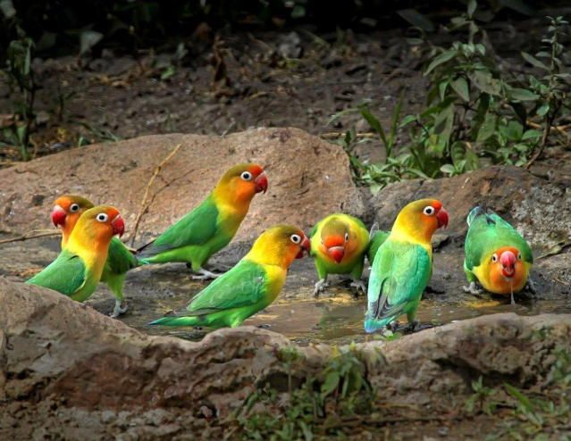
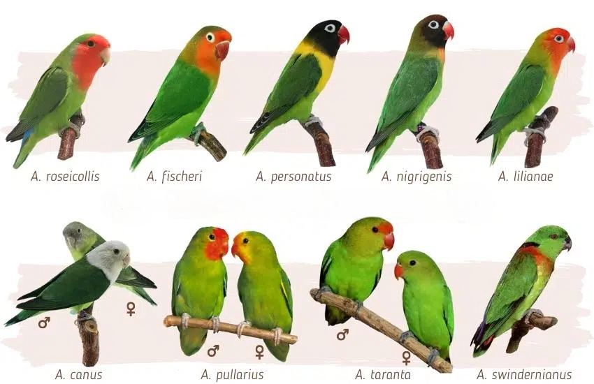

Uno de los motivos por los que se relaciona a los agapornis con el amor es por una peculiaridad de su comportamiento. Son una especie monógama que se elige un único compañero para toda su vida. Y no solo eso: no se separa en ningún momento del ave con el que decide compartir su vida. Se suele decir que, cuando uno de los dos integrantes de la pareja muere, el otro también lo hace. Y por romántico que esto sea, realmente no es así. Cuando los agapornis «enviudan», suelen buscar una nueva pareja con la que sientan afinidad.

¡No hay más que verlos! Son aves cariñosas que se profesan cariños y mimos constantes. Y, si bien esto no es novedoso como tal, la auténtica curiosidad sobre los agapornis es que también lo son con los humanos con los que comparten vida. Lo habitual es que estas aves establezcan un vínculo estrecho con las personas con las que viven. Es más: les gusta el contacto físico. Sin embargo, cuidado: los agapornis son aves territoriales y, si se ven amenazados, pueden resultar incluso agresivos.
Adiestrar agapornis no es una tarea complicada. Son aves cercanas y, además, inteligentes por lo que además disfrutarán de las actividades que les propongamos. Eso sí: es fundamental saber que es una labor que requiere tiempo y, sobre todo, paciencia. Solo si nuestras aves se sienten cómodas y en un ambiente sosegado conseguiremos que el hecho de aprender dé sus frutos. Además hay que considerar otro detalle: para que ese entrenamiento dé frutos, es fundamental jugar con el enriquecimiento ambiental
Los agapornis son digodáctilos. Una de sus curiosidades pero, también, uno de los detalles que las diferencian de otras aves. Esto significa que dos de sus dedos apuntan hacia delante y los otros dos hacia atrás.
La gran mayoria carecen de dimorfismo sexual o, dicho de otra manera, no hay ningún rasgo que permita identificar a simple vista si son hembras o machos. La única manera de saberlo es con un análisis de ADN, los unicos a los que podemos ifentificar entre machos y hembras son a los Taranta, Canus y Pulliarius.
Una de las curiosidades de los agapornis que suelen chocar cuando no los conocemos a fondo. Mientras otras aves se sienten inseguras fuera de sus habitáculos, los agapornis disfrutan ¡y mucho! de estas salidas. No solo les gusta revolotear en espacios controlados para saciar su curiosidad: también agradecen poder ejercitarse.
A diferencia del resto de psitaciformes que anidan en cavidades, cinco de las especies del género (además de la cotorra argentina) se caracterizan por construir su nido en las ramas de los árboles.Dependiendo de las especies la hembra acarreará el material para el nido de varias formas. El inseparable de Namibia inserta los materiales de construcción entre las plumas del obispillo, mientras que el cabecinegro los lleva en el pico. Una vez que empiezan la construcción del nido comienza el apareamiento. Durante esta época se aparean repetidamente. La hembra pone entre tres y seis huevos en días consecutivos.